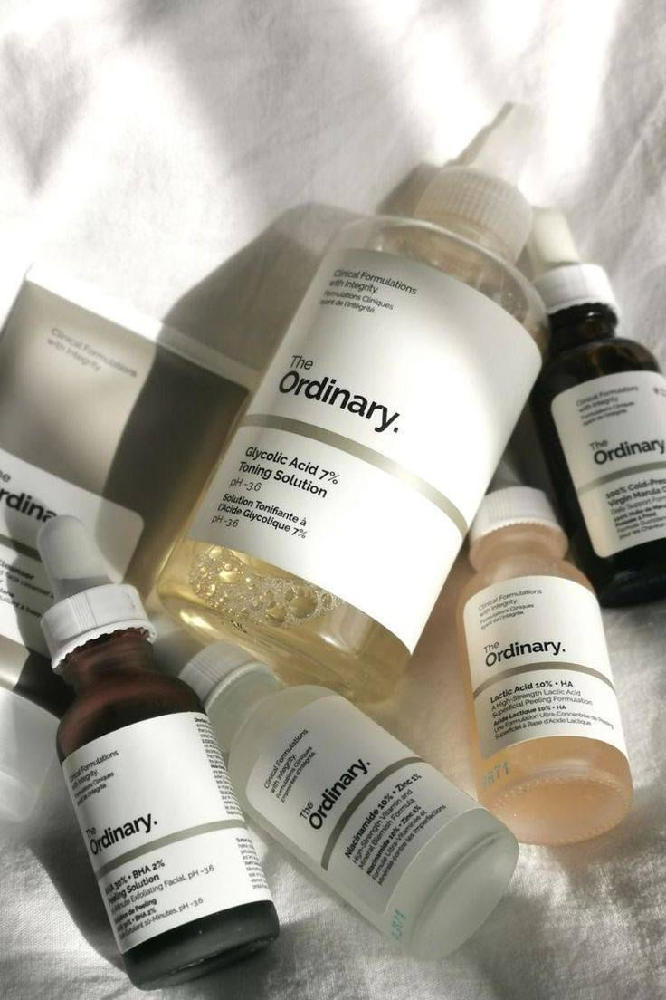

لبشرة المختلطة هي من أكثر أنواع البشرة التي تشكل تحديًا كبيرًا لصاحبها، حيث أنها تجمع بين البشرة الجافة والدهنية، فما هي البشرة المختلطة؟
البشرة المختلطة هي نوع بشرة يحتوي على مناطق جافة ودهنية على الوجه بسبب إنتاج الزيت غير المنتظم في البشرة. غالبًا ما يكون لدى الأشخاص الذين لديهم بشرة مختلطة مناطق دهنية على شكل حرف T، والتي تغطي الجبهة والأنف والذقن وتعرف باسم ال T-zone. قد تميل هذه المناطق إلى ظهور الدهون الزائدة والمسام كبيرة لأن الغدد الدهنية بها أكثر نشاطًا من باقي الوجه بشكل طبيعي. قد تجد في البشرة المختلطة أيضًا بعض خصائص البشرة الجافة على خط الفك والخدين وخط الشعر. وتشمل هذه الخصائص البهتان وظهور الخطوط الرفيعة أو التقشر في بعض الحالات.
نوع البشرة المختلطة وراثي مثل جميع أنواع البشرة ولكنه قد يتطور بسبب التأثيرات الهرمونية والعوامل البيئية الخارجية. فيمكن أن يؤدي ارتفاع إنتاج هرمون التستوستيرون إلى زيادة أعراض البشرة الدهنية. ويمكن أن تؤثر عوامل أخرى مثل الحرارة والرطوبة على حالة البشرة المختلطة. بينما يمكن أن تسبب الرطوبة العالية بشرة لامعة ودهنية وفي بعض الأحيان قد تؤدي الرطوبة المنخفضة إلى جفاف البشرة أو حساسية البشرة.
ما هي علامات البشرة المختلطة؟
ومن الأعراض التي تدل على أن نوع البشرة هو البشرة المختلطة:
تكون الخدود جافة وقشرية.
وجود قشرة في فروة الشعر وخاصة عند النساء.
انسداد المسام ولمعان في منطقة T
تعتبر البشرة المختلطه من ضمن البشرات التي يصعب الاهتمام بها وهذا روتين العناية المناسب لها :
الخطوة الأولى: التنظيف بلطف
يصبح سطح بشرتك مغطّى بالأوساخ، والزيوت الزائدة والشوائب طوال اليوم. تأكدي من استخدام منظف للوجه يساعد على إزالة لمعان منطقة T الدهنية، دون الإفراط في تجفيف الخدّين ومنطقة أسفل العين. تطبيق منظّف مضاد للماء لجميع أنواع البشرة، هو اختيار رائع للبشرة المختلطة، وكذلك أيضاً منظف يحتوي على حمض الساليسيليك. تأكّدي من تنظيف بشرتك صباحاً ومساءً للتخلّص من البكتيريا والزيوت الزائدة بشكل متكرّر. واحرصي على إزالة مكياجك باستخدام مزيل المكياج، كونه يساعد على مكافحة الاحتقان، وتهدئة البشرة الجافة، وتفتيح المسام.
لخطوة الثانية: التونر لاستعادة التوازن
يزيل التونر أيّ زيتٍ لم يتخلص منه منظف الوجه، ويوازن مستويات الحموضة PH في البشرة، فضلاً عن إزالة الزيوت الزائدة، والمساعدة في محاربة الرؤوس السوداء والعيوب. من الأفضل هنا اختيار تونر ذي تركيبة مهدّئة.
لخطوة الثالثة: ترطيب البشرة
بغضّ النظر عن نوع بشرتك، إنّ استخدام المرطب ضروري للحفاظ على صحة ونضارة بشرتك. بالنسبة للبشرة المختلطة، أفضل رهان لك هو اختيار المرطبات الخالية من الزيوت التي لن تضيف شحماً إضافياً إلى منطقة T-ZONE، بل تعمل على استهداف الزيت، بغية الحصول على تأثير مزدوج من خلال إزالة اللمعان وتنقية المسام، مما يجعله أساساً رائعاً لاستخدامه قبل المكياج.
قد تحتاجين إلى مرطّبين لبشرتك المختلطة. بالنسبة للمناطق الجافة، اختاري تركيبة كريمية، أمّا للأجزاء الدهنية، فاختاري تركيبة خفيفة الوزن تعتمد على الماء.
لخطوة الرابعة: كريم واقٍ من الشمس
من الضروري حماية بشرتك من أشعة الشمس فوق البنفسجية الضارّة، حتى عندما يكون الجو غائماً بالخارج. لذا احرصي على تطبيق منتج حماية من الشمس يومياً، وابحثي عن تركيبة خفيفة الوزن وغير دهنية

يمكن ان تتضاعف مشاكل البشره المختلطه بسبب اختلاف اماكن الجفاف والدهون بالوجه وفي هذه الحاله يجب ان تلجأ لطبيب جلديه حتى تتمكن من حل مشاكل البشره التي تواجهها